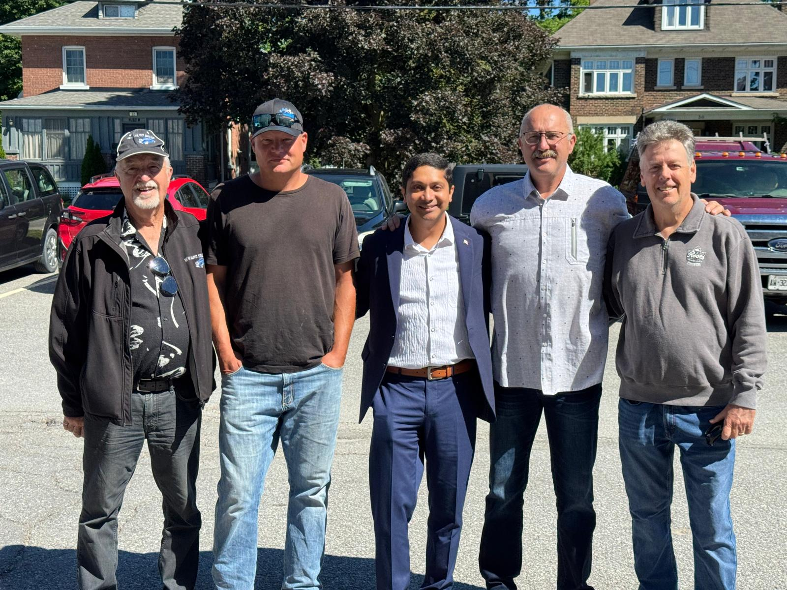

Down-to-Earth. Hardworking. Ready to Serve Ward 4.
Oakwood Grocery owner, Ward 4 resident. A local business owner, community volunteer, husband, father, and advocate committed to putting residents first.
Guru is a proud Oakwood business owner who believes trust is built through hard work, honesty, respect, and showing up for people.
"Walk in as a customer, walk out as a friend."
Many residents know Guru through Oakwood Grocery, where he spends his days serving customers, listening to concerns, and helping bring people together. Through these daily conversations, he hears firsthand about the challenges facing families, seniors, farmers, commuters, and small businesses across Ward 4.
A business voice and a community voice, working together for Ward 4.
Guru holds a Master's Degree in Business and has worked in banking, insurance, customer service, financial analysis, risk management, and business operations.
His experience includes working with organizations such as BMO, Rogers, and Lombard Insurance.
Through his leadership role with iLCO Ontario, Guru helped unite more than 250 independent stores across Ontario and worked with government representatives to advocate for small businesses and rural communities.

Practical solutions. Real results.
Improve roads, drainage, culverts, and rural infrastructure.
Support crime prevention, public safety, and stronger communication.
Advocate for programs and services that help seniors thrive.
Support child care, parks, recreation, and youth programs.
Work closely with farming families and strengthen agriculture.
Deliver value for taxpayers through transparent decision-making.
Residents deserve a councillor who is available, responsive, and accountable.
Guru is committed to regular community meetings, open communication, and keeping residents informed throughout the year — not just during election season.
He will listen. He will follow up. He will keep residents informed.
Ward 4 is not one single community. It's made up of rural villages, lake communities, farming families, seniors, small businesses, commuters, and young families who have helped build this area over many years.
I'm running because I believe Ward 4 needs a councillor who will listen, follow up, and focus on the practical local issues that affect people every day.
Many Ward 4 properties rely on wells, septic systems, and rural roads. I won't make false promises — I'll push for clear information, better planning, and real follow-up on roads, drainage, and flooding concerns.
Ward 4 has many seniors who want to stay in their homes and feel safe. I'll improve communication on senior services, fraud prevention, accessibility, and transportation.
Scams, theft, and rural property crime are real concerns. I'll work with police and community groups to support more education, prevention, and communication.
Many parents commute long distances for work. I'll advocate for more licensed child-care, before & after-school programs, and summer programs close to home.
Families shouldn't always have to drive to a larger centre for activities. I'll support better playgrounds, park upgrades, and safe community spaces.
Sports, arts, tutoring, coding, robotics, and leadership programs. Rural kids shouldn't be left behind as technology and opportunity evolve.
As a small business owner, I understand rising costs and red tape. I'll bring a practical, fiscally responsible voice to council.
Ward 4 should be a place where families grow, children learn, seniors feel safe, and every taxpayer is respected.
My promise is simple: I will be available, I will listen, I will follow up, and I will keep residents informed.
I am running to be a strong local voice for Ward 4 — focused on local issues, honest answers, real follow-up, and practical solutions.
Do you care about the future of Ward 4?
Be a part of positive change across Ward 4. Volunteer, share ideas, request a lawn sign, make calls, deliver flyers, or help spread the word. Every bit of support matters.
Together, we can build a stronger Ward 4.
Get InvolvedCandidate for Ward Councillor, Ward 4 · City of Kawartha Lakes